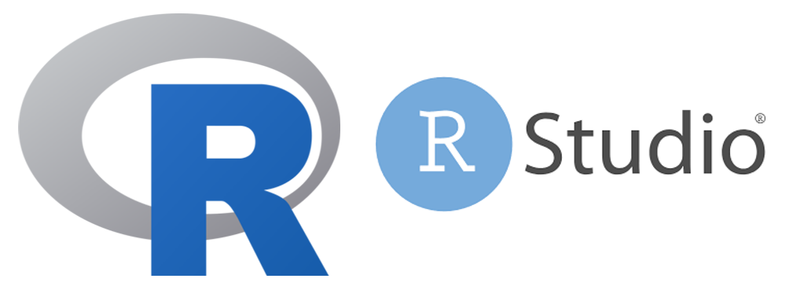

R
R에 대해
통계 계산과 그래픽을 위한 프로그래밍 언어이자 소프트웨어 환경
뉴질랜드 오클랜드 대학의 로스 이하카와 로버트 젠틀맨에 의해 개발(1992)
GPL 하에 배포되어 비용에 부담없이 자유롭게 사용
많은 연구자들에 의해 새롭게 만들어진 최신의 알고리즘과 로직들을 Package 형태로 제공하여 다른 어떤 통계 소프트웨어들보다도 다양한 분석방법 등을 제공
초기 접근이 다른 통계 소프트웨어보다 불편하게 느껴질 수 있지만, 익숙해지면 편하게 다룰 수 있음
설치
cran
R 패키지를 호스팅, 저장, 공유하는 공식적인 위치
Rstudio
Rstudio
R 프로그래밍 언어와 관련된 통합 개발 환경(IDE) 중 하나
R 패키지를 설치하고 관리하는 도구를 제공, 함수 및 패키지에 대한 도움말에 쉽게 액세스
데이터 구조를 검사하고 조작하는 도구를 제공, 스크립트 편집
프로젝트관리, 버전관리, Git, 보고서 작성 등등..